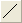
Ausgewählte Daten werden als Liniendiagramm gezeichnet.
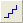
Ausgewählte Daten werden als ein horizontales Stufendiagramm gezeichnet.
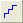
Ausgewählte Daten werden als ein vertikales Stufendiagramm gezeichnet.
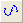
Ausgewählte Daten werden mit einer Spline-Verbindung gezeichnet.
Ausgewählte Daten werden als Punktdiagramm gezeichnet.
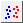
Ausgewählte Daten werden als gruppiertes Punktdiagramm mit Indexdaten gezeichnet.
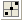
Ausgewählte Daten werden als Punktdiagramm mit zentriertem Ursprung gezeichnet.
Ausgewählte Daten werden als ein Punkt-Säulendiagramm gezeichnet.
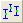
Ausgewählte Daten werden mit Y-Fehlerbalken gezeichnet.
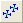
Ausgewählte Daten werden mit X- und Y-Fehlerbalken gezeichnet.
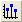
Ausgewählte Daten werden mit vertikalen Ankerlinien gezeichnet.
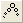
Ausgewählte Daten werden als Blasendiagramm gezeichnet.
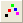
Ausgewählte Daten werden als Farbdiagramm gezeichnet.
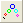
Ausgewählte Daten werden als Farbblasendiagramm gezeichnet.
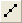
Ausgewählte Daten werden als Linien- und Punktdiagramm gezeichnet.
Ausgewählte Arbeitsblattspalten werden als Kurvenschardiagramm gezeichnet.
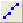
Ausgewählte Daten werden als ein 2-Punkt-Segment-Diagramm gezeichnet.
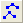
Ausgewählte Daten werden als ein 3-Punkt-Segment-Diagramm gezeichnet.
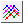
Eine gemeinsam genutzte "X"-Zeile und eine oder mehrere "Y"-Zeilen werden als ein gruppiertes Punkt-Liniendiagramm gezeichnet. Siehe Zeilenweises Diagramm.
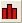
Ausgewählte Daten werden als ein vertikales Säulendiagramm gezeichnet.
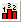
Ausgewählte Daten werden als Säulendiagramm mit Beschriftung gezeichnet.
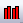
Ausgewählte Daten werden als gruppiertes Säulendiagramm mit Indexdaten gezeichnet.
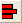
Ausgewählte Daten werden als ein horizontales Balkendiagramm gezeichnet.
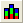
Ausgewählte Daten werden als ein vertikal gestapeltes 100%-Säulendiagramm gezeichnet.
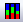
Ausgewählte Daten werden als ein horizontal gestapeltes 100%-Balkendiagramm gezeichnet.
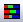
Ausgewählte Daten werden als ein horizontal gestapeltes Balkendiagramm gezeichnet.
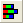
Ausgewählte Daten werden als ein horizontal gestapeltes Balkendiagramm gezeichnet.
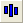
2 ausgewählte Y-Arbeitsblattspalten werden als ein Diagramm mit freien Säulen gezeichnet.
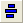
2 ausgewählte Y-Arbeitsblattspalten werden als ein Diagramm mit freien Balken gezeichnet.
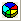
Ausgewählte Y-Arbeitsblattspalten werden als ein farbiges dreidimensionales Kreisdiagramm gezeichnet.
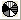
Ausgewählte Y-Arbeitsblattspalten als schwarzweißes zweidimensionales Kreisdiagramm gezeichnet.
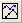
2 ausgewählte Y-Arbeitsblattspalten werden als ein Diagramm mit doppelter Y-Achse gezeichnet.
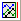
3 ausgewählte Y-Arbeitsblattspalten werden als ein Diagramm mit doppelter, nach rechts versetzter Y-Achse gezeichnet.
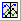
3 ausgewählte Y-Arbeitsblattspalten werden als ein Diagramm mit doppelter, zentriert versetzter Y-Achse gezeichnet.
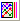
4 ausgewählte Y-Arbeitsblattspalten werden als ein Diagramm mit doppelter Y-Achse und zwei nach rechts versetzten Y-Achsen gezeichnet.
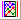
4 ausgewählte Y-Arbeitsblattspalten werden als ein Diagramm mit doppelter Y-Achse und doppelt versetzter Y-Achse gezeichnet.
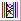
Ausgewählte Y-Arbeitsblattspalten werden als Diagramm mit mehreren Y-Achsen gezeichnet.
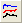
Ausgewählte Arbeitsblattspalten als versetzte, übereinander gestapelte Liniendiagramme gezeichnet.
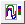
Ausgewählte Arbeitsblattspalten werden als eine Farbkodierte Linienkurvenschar gezeichnet (ein abgeflachtes 2D-Wasserfalldiagramm mit einer Farbabbildung angewendet auf Z-Werte).
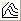
Ausgewählte Arbeitsblattspalten werden als Wasserfalldiagramm gezeichnet.
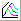
Ausgewählte Arbeitsblattspalten werden als Wasserfalldiagramm mit Y-Farbabbildung gezeichnet.
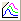
Ausgewählte Arbeitsblattspalten werden als Wasserfalldiagramm mit Z-Farbabbildung gezeichnet.
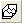
Ausgewählte Arbeitsblattspalten werden als 3D-Wasserfalldiagramm gezeichnet.
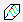
Ausgewählte Arbeitsblattspalten werden als 3D-Wasserfalldiagramm mit Y-Farbabbildung gezeichnet.
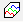
Ausgewählte Arbeitsblattspalten werden als 3D-Wasserfalldiagramm mit Z-Farbabbildung gezeichnet.
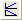
Ausgewählte Daten werden in eine Vorlage mit 2 vertikalen Feldern gezeichnet.
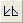
Ausgewählte Daten werden in eine Vorlage mit 2 horizontalen Feldern gezeichnet.
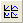
Ausgewählte Daten werden in eine Vorlage mit 4 Feldern gezeichnet.
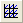
Ausgewählte Daten werden in eine Vorlage mit 9 Feldern gezeichnet.
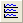
Jede Datenbank wird mit Hilfe einer Stapelvorlage in ein separates Layer gezeichnet.
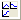
Ein Diagramm mit mehreren Layern wird mit Hilfe der Gruppierung von Spaltenbeschriftungen gezeichnet.
Ausgewählte Daten werden als Boxdiagramm gezeichnet.
Ausgewählte Daten werden als Violindiagramm mit Box gezeichnet.
Ausgewählte Daten werden als Intervalldiagramm gezeichnet.
Ausgewählte Daten werden mit Index als gruppiertes Boxdiagramm gezeichnet.
Ausgewählte Rohdaten werden als gruppiertes Boxdiagramm gezeichnet.
Ausgewählte Y-Spalten werden als Histogramm gezeichnet.
Es wird ein Histogramm für ausgewählte Arbeitsblattspalten gezeichnet und ein Diagramm mit kumulativer Anzahl erstellt.
Ausgewählte Daten werden in gestapelten Histogrammen gezeichnet.
Zwei ausgewählte Datensätze werden als marginales Histogramm gezeichnet.
Zwei ausgewählte Datensätze werden als marginales Boxdiagramm gezeichnet.
Eine ausgewählte einzelne Y-Spalte oder XY-Spalte wird als 2D-Kernel-Dichtediagramm gezeichnet.
Ausgewählte Arbeitsblattspalten werden als QC-Diagramm gezeichnet.
Ausgewählte Arbeitsblattspalten werden als Pareto-Diagramm mit eingeteilten Daten gezeichnet.
Ausgewählte Arbeitsblattspalten werden als Pareto-Diagramm mit Rohdaten gezeichnet.
Ausgewählte Daten werden als Matrix von Streudiagrammen gezeichnet.
Ausgewählte Arbeitsblattspalten werden als Wahrscheinlichkeitsdiagramm gezeichnet.
Ausgewählte Arbeitsblattspalten werden als Q-Q-Diagramm gezeichnet.
Ausgewählte Daten werden als Flächendiagramm gezeichnet.
Ausgewählte Daten werden als Stapelflächendiagramm gezeichnet.
2 ausgewählte Arbeitsblattspalten werden als Diagramm mit gefüllten Flächen gezeichnet.
Ausgewählte Arbeitsblattspalten werden als Polardiagramm Theta(X) und r(Y) gezeichnet.
Ausgewählte Arbeitsblattspalten werden als Polardiagramm r(X) und Theta(Y) gezeichnet.
Ausgewählte Arbeitsblattspalten werden als Windrosendiagramm mit eingeteilten Daten gezeichnet.
Ausgewählte Spalten werden als Windrosendiagramm mit Rohdaten gezeichnet.
Ausgewählte Daten werden als Ternärdiagramm gezeichnet.
Ausgewählte Daten werden als Piperdiagramm gezeichnet.
Ausgewählte Arbeitsblattspalten werden als Smith-Diagramm gezeichnet.
Ausgewählte Daten werden als Radardiagramm gezeichnet.
3 ausgewählte Y-Arbeitsspalten werden als ein Vektordiagramm XYWG gezeichnet.
4 ausgewählte Y-Arbeitsspalten werden als ein Vektordiagramm XYXY gezeichnet.
Ausgewählte Daten werden in eine Vorlage zum Zoomen gezeichnet.
3 ausgewählte Y-Arbeitsspalten werden als ein HLC-Diagramm gezeichnet.
Ausgewählte Daten werden als Japanische Candlesticks gezeichnet.
Ausgewählte Daten werden als OHLC-Balkendiagramm gezeichnet.
Ausgewählte Daten werden als OHLC-Volumendiagramm gezeichnet.
Ausgewählte Daten werden als Liniendiagramm gezeichnet (angepasst an Kursdiagramme).
Öffnet den Dialog Graph Maker.
Die Vorlagenbibliothek wird geöffnet.